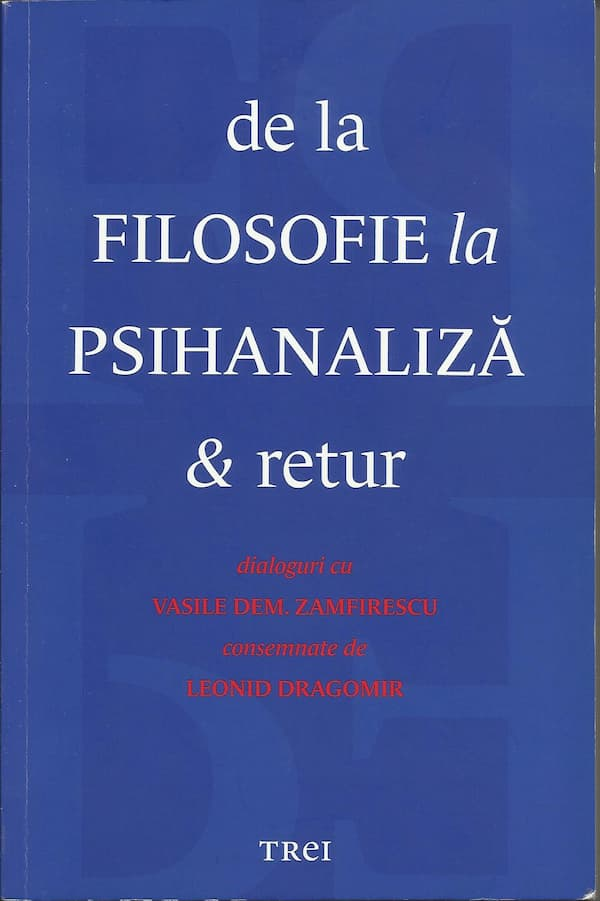

Scriitorul Leonid Dragomir și-a obișnuit cititorii cu frumoase introduceri în câte o lume, prin fiecare dintre cărțile de dialoguri, având interlocutori pe Mihai Șora și Dan Ciachir, rezultând volumele Mihai Șora – o filosofie a bucuriei și a speranței (Editura Cartea Românească, 2009) și Bucuria de a fi răsăritean. Convorbiri cu Dan Ciachir (Editura Timpul, 2011). În cea mai recentă carte de acest gen – De la filosofie la psihanaliză & retur, Editura Trei, 2014 – cel care se află în fața întrebărilor este cunoscutul psihanalist Vasile Dem. Zamfirescu. În rândurile de mai jos voi prezenta o selecție – subiectivă – a unora dintre problemele disputate în carte, a cărei valoare rezidă tocmai în valențele și mizele polemicilor. Dintre multiplele orizonturi deschise de carte am ales să mă raportez, urmând firul discuțiilor, numai la acela în care sunt provocate într-un fel sau altul diferite idei ce fac parte din creștinism.
Ca o primă observație, este evident cât de mult înseamnă orizontul în care trăiește interlocutorul, comparând între ele aceste trei cărți, și relevant sub aspectul atmosferei create. Din cauza materialismului la care aderă V.D. Zamfirescu, atmosfera acestui volum seamănă deseori cu cenușiul orașelor comuniste. Întrebările lui Leonid Dragomir, care încearcă să aducă discuția pe terenul unei autentice spiritualități, sunt ca niște fire de iarbă ce încearcă să străpungă betonul. Nu am apelat în mod gratuit la atributul „autentic”; de multe ori apar termenii spirit și spiritualitate în carte, însă resemnificarea lor te pune pe gânduri: „spiritul ar fi partea comunicabilă din noi, acel noi din fiecare eu”, în timp ce „sufletul ar fi partea individuală, necomunicabilă” (p. 49). Distincția este considerată importantă pentru a explica geneza creației artistice: întâlnirea între suflet (partea inefabilă a eului) și spirit (partea „traductibilă” a eului) se suprapune peste aceea dintre natură și cultură. Nu neg faptul că suflet și spirit pot fi înțelese și așa, dar în nici un caz nu poate fi acceptată reducerea lor numai la atât, golind spiritul de transcendență.
Așadar, șochează în primul rând ideea acestei noi „spiritualități” materialiste, adică o floare de plastic. Cu tot respectul pentru activitatea academică a dlui V.D. Zamfirescu, este imposibil să nu remarc sărăcirea pe care o aduce o perspectivă de acest fel și, prin aceasta, irelevanța răspunsurilor psihanalizei (cel puțin așa cum este prezentată aici) la marile drame ale omului, la „ce”-ul său vizând sensul vieții. Ce îi poți spune unui tânăr care se luptă cu senzația de gol din jurul său? Că îți „ordonez” inconștientul? Și apoi, dacă se dezordonează imediat, mai rău decât înainte? Cu asemenea răspunsuri și metode de „salvare” îmi dau seama că strigătul omului – ale cărui nevoi metafizice, duhovnicești, nu pot fi ignorate – rămâne unul neauzit sau pe care o mare parte a psihanaliștilor se face că nu-l aude.
Dincolo de conținuturile transmise și de conturarea epocilor pre și post decembriste, principala utilitate a cărții este indiscutabil aceea de a oferi ocazia observării contrastului dintre sterilitatea noilor spiritualități materialiste (din care face parte și psihanaliza practicată de V.D. Zamfirescu) și bogăția de viață a creștinismului. Sau contrastul dintre cunoștințele nemântuitoare (ori chiar antimântuitoare) și Cunoaștere. Nu neg cele câteva merite ale psihanalizei, însă absolutizarea ei și cu atât mai mult așezarea pe soclul spiritualității reprezintă un abuz – ca florile de plastic. Materialismul și psihismul nu pot da răspunsuri adecvate, tocmai pentru că nu se raportează adecvat la om; se apelează la o lentilă spartă. Edmund Husserl, părintele fenomenologiei, atrage atenția, în critica sa la adresa obiectivismului și psihologismului (în Filosofia ca știință riguroasă și în Criza umanității europene și filosofia), asupra acestui pericol al abordării inadecvate; de aceea o știință despre psihic nu este și o știință despre suflet.
De exemplu, dl. Zamfirescu afirmă că este normal și „nu este ceva monstruos să și urăști persoanele pe care le iubești, pentru că așa e natura umană”, iar puțin mai înainte, la aceeași pagină (51): „de fiecare dată când mă întâlnesc cu ambivalența afectivă în diferite forme, de fiecare dată retrăiesc și surpriza și opoziția față de această realitate care într-adevăr trebuie trecută printre existențiali”. Faptul că există o largă paletă afectivă este ceva, dar ideea că ambivalența afectivă față de o persoană este un existențial este cu totul altceva, pentru că se vorbește despre posibilitate ca și cum ar fi un dat. Unul dintre cele mai bune tratate de psihologie (în sens etimologic, ca știință despre suflet) este Scara Sfântului Ioan din Sinai. Acolo rezolvările nu sunt pe jumătate sau pe sfert, ci depline, pentru că se ține cont de omul întreg; antropologia creștină nu este ciuntită și nu merge pe bâjbâite, ea beneficiind de experiența înaintașilor, continuu interogată și reconfirmată.
Cunoașterea structurii umane, preocupare deosebită pentru creștini, este absolut necesară pentru înțelegerea latențelor ce pot fi dezvoltate și a carențelor pe care trebuie să le depășim. Sfinții Părinți, mari antropologi, știu că omul (trup, suflet și duh sau spirit), în funcție de raportul dintre părțile sale și de activarea unora în detrimentul altora, se poate îndobitoci sau îndumnezei. Lupta continuă a creștinului – spre deosebire de lupta continuă a celui care își face „analiza” (în sensul promovat de psihanaliză) – nu se desfășoară niciodată într-o singurătate ontologică, ci este totdeauna vegheată, iar Hristos, ca să îl citez pe Nicolae Steinhardt, pune umărul, nu este retras, ca Buddha, în nirvana. De asemenea, în creștinism există conștiința faptului că lupta este mult mai complexă, provocările venind dinspre trup, lume și diavol; bineînțeles, diavolul este pentru mulți psihanaliști doar un bau-bau al „umbrei”, ideea existenței unor ființe imateriale malefice făcându-i să zâmbească.
În sfârșit, aflăm – din reproșul pe care dl. Zamfirescu i-l aduce lui Max Scheler – că, „științific” vorbind (nu de-altceva, dar și Nietzsche „demonstrase”, doar filosofic), morala creștină are o natură resentimentară, este un produs al resentimentului claselor defavorizate. De asemenea, ca să nu existe confuzii, psihanalistului i se pare (vezi paginile 54-55), combinând niște idei, că „ideea iubirii creștine este un produs al resentimentului, ceea ce nu înseamnă că ea a jucat doar un rol negativ” (deci în general a jucat un rol negativ!). Și tot așa și mai departe, ca să ne intre bine în cap.
Așadar, mai bine să ne sondăm inconștientul cu ajutorul unui psihanalist. Dar după care teorie? A cărui psihanalist? Mai ales că există și pericole: „Sunt și cazuri de acest fel când se produc regresii [spre psihoză] maligne, dar nu sunt frecvente” (p. 91). În cazul spovedaniei și al pregătirii dinaintea ei, „sondarea” interioară este fără reacții adverse. „Pericolul” este numai acela că îți cresc vizibil șansele de vindecare.
La întrebarea adresată de Leonid Dragomir – dacă psihanaliza nu riscă să capete și ea un accent ideologic, ținând cont că Freud se raportează la religie asemenea ideologiei comuniste – interlocutorul său ne asigură că „Sunt șanse reduse, pentru că psihanaliza este chiar opusul ideologiei. Ea implică o experiență reală care asigură desprinderea de idoli, de falșii lideri. Ea este o practică și o teorie a demistificării și a individuației” (p. 95). Însă imediat mai departe aflăm cât de mult luptă psihanaliza cu idolii: psihanaliștii pun mare preț pe „genealogie” în rândul breslei. V.D. Zamfirescu afirmă că această sursă de legitimitate este „și ca un fel de titlu de noblețe: eu mă trag din Freud. Despre noi, psihanaliștii români, nu se poate spune așa ceva (…) Ulterior, în ultimii 10-15 ani, unii dintre colegii noștri au făcut analiză în Occident și, indirect, prin analiștii lor, s-au înrudit cu Freud”. Deci eliminăm idolii, dar vrem să ne înrudim cu Freud care astfel devine pentru adepții săi un „tătuca”. Mulți psihanaliști îl resping pe Hristos și învățătura iubirii creștine „resentimentare”, dar vor să se tragă din Freud. Tristă situație!
Din cauza definițiilor date sufletului și spiritului, partea necomunicabilă, respectiv aceea comunicabilă a eului, întâlnim nedumeriri deghizate în întrebări precum următoarea: „În această carte [Filosofia inconștientului] pledați pentru o autonomie funcțională, nu genetică a spiritului conștient. Adică deși spiritul își are originea în suflet, în zona inconștientului, totuși el își poate controla sursele sufletești din care provine. Nu riscă o astfel de viziune, ce ține de paradigma freudiană, de data aceasta, să epuizeze spiritul în conținuturi sufletești?” (p. 107).
Urmărind firul discuției și fiind atent la amalgamul de concepte mult prea mobile, începi să observi că ai de-a face cu o revrăjire a lumii prin limbaj, aspect care a fost în detaliu analizat de Karl Popper încă din prima sa lucrare de bază, Logica cercetării, apărută în 1934. Așa-zisul statut științific al psihanalizei este serios pus la îndoială de Popper, principalul argument fiind acela că psihanaliza se sustrage testabilității; pentru că nu spune ceva clar despre realitate, în principiu ea nu poate fi infirmată, falsificată, așa cum nu poate fi infirmat nici marxismul. Aceste aspecte sunt sesizabile și citind cartea în discuție; începi să crezi că nu prea se știe nimic sigur despre suflet. Aflăm că „ceea ce are în comun orice psihanaliză cu domeniul științei este o anumită rigoare rațională (…) între știință și artă” (p. 110), deci o rigoare… ambiguă. Câtă diferență între această bâjbâială și unitatea ortodoxiei privind cunoașterea despre suflet și luptele sale, cauzele căderilor și armele ridicărilor, pornirile „inconștiente” (da, inconștientul nu a fost descoperit de Freud!) și discernământul necesar pentru a face lumină în lumea ascunsă, subterană a sufletului. Pentru testarea a ceea ce afirm, recomand Războiul nevăzut, ediția Sfântului Nicodim Aghioritul sau, mai bine, a Sfântului Teofan Zăvorâtul, scrisă în secolul al XIX-lea, deci înainte de apariția școlii psihanalitice; cei doi participau însă la o Școală veche de 1900 de ani (atunci).
Deși Freud, într-o etapă matură a operei sale, dă curs „vocației filosofice reprimate” (p. 112), el nu părăsește paradigma materialistă (așa cum ar putea să ne dea impresia contextul), din cauza resemnificării păguboase – a sufletului și spiritului – care ne aruncă de tot în confuzie. În plus, științele nu duc neapărat la materialism, ba dimpotrivă, dacă ținem cont de rezultatele fizicii cuantice. De asemenea, filosofia nu trebuie neapărat asociată spiritualului doar pentru că pomenește de spirit. Multe filosofii sunt materialiste, încă din antichitate (precum atomismul), culminând cu reprezentanții Iluminismului francez; nu este deloc întâmplător că psihanaliza, o „spiritualitate” materialistă, a prins foarte bine în Franța, leagănul materialismului modern.
Prin modul cum este prezentată în această carte de dialoguri, psihanaliza seamănă mai mult cu o religie de-transcendentalizată, „purificată” de metafizic – o recunoaște indirect V.D. Zamfirescu: „Cred că orice psihanaliză are o încărcătură religioasă, măcar în ceea ce privește modul de organizare al asociațiilor psihanalitice, ca niște biserici, cum pe bună dreptate s-a spus. Există întemeietori, apostoli, ierarhi, apărători ai purității doctrinei ș.a.” (p. 120). „Mântuirea” rămăsese ultimul termen ce trebuia platizat pentru ca relativizarea să fie deplină: „Acceptarea faptului că psihanaliza reprezintă una dintre căi, nu calea, înseamnă mântuire, normalitate” (p. 143).
Dimensiunea speculativă a psihanalizei iese mult mai bine în evidență atunci când este aplicată la nivel social. Iar vechile obsesii ale psihanalistului reapar și aici. La observația lui Leonid Dragomir privind o autentică noblețe și înțelepciune a lui Noica (discutând pe marginea cărții Rugați-vă pentru fratele Alexandru) în raport cu torționarii, psihanalistul ne lămurește: „părerea mea este că la Constantin Noica nu era vorba de asumare, ci de o ascundere a conflictului. A-ți fi milă de torționar este, presupun, o fugă de problemă, o evitare. L.D.: Deși creștinismul asta propovăduiește, iertarea și mila, chiar iubirea față de dușman. V.D.Z.: Dar creștinismul are rădăcini resentimentare, așa cum au arătat Nietzsche și alții după el” (p. 137). Acest „au arătat” este foarte slab, însă V.D.Z. îl ia ca pe o axiomă convenabilă pentru „spiritualitatea” pe care o propovăduiește. Se pare că el îi vede pe toți după propriul calapod, nu înțelege că poate exista o autentică iertare și jertfă. Este un mecanism binecunoscut ca atunci când realitatea nu se mai potrivește teoriei pe care o iubești, să „aranjezi” realitatea astfel încât să se încadreze universului tău conceptual. (Știința funcționează exact invers). Acestui viciu al pseudoștiințelor îi sunt dedicate multe pagini de către epistemologi. Și apoi, cum rămâne cu afirmația că psihanaliza este angajată în lupta împotriva idolilor?!

Comentarii